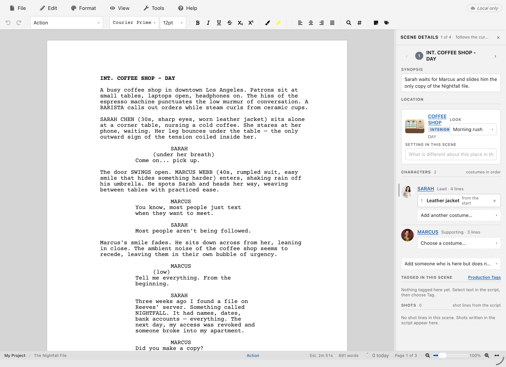

Scene Details
Everything in the scene you are writing: where it is set and how the place looks, who is there and what each of them wears, what is tagged, and its shots.
Opening Scene Details
Open it from View > Panels > Scene Details. It docks beside the script like the other panels, and View > Layout can move it to another side or group it with them. To put a button for it on the toolbar, add Scene Details in the toolbar’s customise list.

The panel follows the cursor: it always shows the scene you are in. The ‹ and › buttons move the cursor to the previous or next scene, and clicking the heading jumps to it. When the panel is wide enough, the scene’s shots sit in a second column.
What Comes From the Script
Scene Details reads most of what it shows from the script itself, so there is nothing to keep in step:
- The location and whether it is interior or exterior, from the scene heading.
- The time of day, from the end of the heading (
- NIGHT). - Who speaks, and how many lines each person has.
- The shots: every Shot element in the scene.
- What is tagged: production tags inside the scene, by category.
What the script cannot say, you add here: the costumes, the look of the location, a note on the setting, and people who are there without speaking. These are kept on the scene heading, like the synopsis and the scene colour, so they move with the scene when you cut, paste or reorder it, and collaborators see them as you make them.
Synopsis
The same synopsis the Navigator shows. Edit it here and it is saved when you leave the field.
Location and Look
The location card shows the place the heading names, with its image. Click the name to open the location in Location Profiles on its Scenes tab.
- Look — which of the location’s looks this scene shows (Day, Night, Dressed for the party…). Left on As the heading says, the scene shows the look named like its time of day, so
INT. KITCHEN - NIGHTshows the kitchen’s Night look without you choosing it. The card’s image follows the look. - Setting in this scene — what is different about the place this time: “After the party, bottles everywhere”.
If the place is not in Location Profiles yet, an Add button records it. Looks are created in Location Profiles; if the location has none, the card links there.
Characters and Costumes
Everyone who speaks in the scene is listed in the order they first speak, with their role and line count. Click a name to open that character in Character Profiles on their Scenes tab.
Costumes, In Order
Under each character, choose what they wear from the costumes on their profile. A character can change during a scene, so a scene can list more than one costume:
- Choose the first costume from Choose a costume…. It is worn from the start.
- Choose another from Add another costume…, and say when the change happens (“After the fight”).
- Use ↑ and ↓ to change the order, and × to remove one.
To make a costume that does not exist yet, choose New costume…, name it, and press Add. It is added to the character’s profile, where you can give it a reference image, and worn in this scene.
People Who Do Not Speak
Someone who is in the scene but has no lines — a waiter, a sleeping child — can be added from Add someone who is here but does not speak…. They then appear in the list (marked does not speak) with their own costumes, and in that character’s Scenes tab. The × beside their name takes them out of the scene again.
Tagged in This Scene
Every production tag in the scene’s text, grouped by category — Props, Set Dressing, Sound and so on. The Production Tags link opens the Tags panel.
Shots
Each Shot element in the scene is listed with the references it needs: the location and its look, and each character the shot names, with the costume they wear. Click a shot to jump to it.
When a character changes costume during the scene, each shot that names them has a costume picker, so you can say which costume that shot shows. Until you choose, the first shot shows the first costume and the later shots show the last one.
Add-ons: an add-on can put its own buttons under the scene or on each shot — for example to make a clip from the shot and its references — and show what it made beside the shot. See Plugin & Add-on Development.
Seeing It the Other Way Round
- One scene, everyone in it — this panel.
- One character, every scene — the character’s Scenes tab in Character Profiles: where they are, with whom, and what they wear in each.
- One location, every scene — the location’s Scenes tab in Location Profiles: the look and setting note for each scene, and who is there in what.
Costumes, looks and setting notes are the same data in all three places: change one anywhere and the others show it.